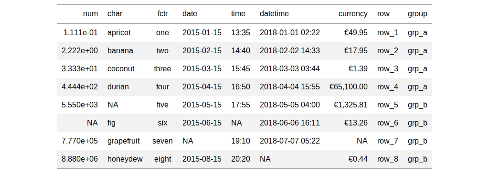

| fmt_currency {gt} | R Documentation |
With numeric values in a gt table, we can perform currency-based formatting. This function supports both automatic formatting with a three-letter currency code and numeric formatting facilitated through the use of a locale ID. For fine control the conversion from numeric to currency values, we can take advantage of the following options:
the currency: providing a currency code or common currency name will procure the correct currency symbol and number of currency subunits
currency symbol placement: the currency symbol can be placed before or after the values
decimals/subunits: choice of the number of decimal places, and a choice of the decimal symbol, and an option on whether to include or exclude the currency subunits (decimal portion)
negative values: choice of a negative sign or parentheses for values less than zero
digit grouping separators: options to enable/disable digit separators and provide a choice of separator symbol
scaling: we can choose to scale targeted values by a multiplier value
pattern: option to use a text pattern for decoration of the formatted currency values
locale-based formatting: providing a locale ID will result in currency formatting specific to the chosen locale
fmt_currency(data, columns, rows = NULL, currency = "USD",
use_subunits = TRUE, negative_val = "signed", decimals = NULL,
use_seps = TRUE, scale_by = 1, pattern = "{x}", sep_mark = ",",
dec_mark = ".", placement = "left", incl_space = FALSE,
locale = NULL)
data |
a table object that is created using the |
columns |
the columns to format. Can either be a series of column names
provided in |
rows |
optional rows to format. Not providing any value results in all
rows in |
currency |
the currency to use for the numeric value. This input can be
supplied as a 3-letter currency code (e.g., |
use_subunits |
an option for whether the subunits portion of a currency value should be displayed. |
negative_val |
the formatting to use for negative values. With
|
decimals |
an option to specify the exact number of decimal places to
use. The default number of decimal places is |
use_seps |
an option to use digit group separators. The type of digit
group separator is set by |
scale_by |
a value to scale the input. The default is |
pattern |
a formatting pattern that allows for decoration of the
formatted value. The value itself is represented by |
sep_mark |
the mark to use as a separator between groups of digits
(e.g., using |
dec_mark |
the character to use as a decimal mark (e.g., using
|
placement |
the placement of the currency symbol. This can be either be
|
incl_space |
an option on whether to include a space between the value and the currency symbol. The default is to not introduce a space character. |
locale |
an optional locale ID that can be used for formatting the value
according the locale's rules. Examples include |
We can use the info_currencies() function for a useful
reference on all of the possible inputs to currency.
Targeting of values is done through columns and additionally by
rows (if nothing is provided for rows then entire columns are
selected). A number of helper functions exist to make targeting more
effective. Conditional formatting is possible by providing a conditional
expression to the rows argument. See the Arguments section for more
information on this.
an object of class gt_tbl.

Other data formatting functions: data_color,
fmt_datetime, fmt_date,
fmt_missing, fmt_number,
fmt_passthrough, fmt_percent,
fmt_scientific, fmt_time,
fmt, text_transform
# Use `exibble` to create a gt table;
# format the `currency` column to have
# currency values in euros (EUR)
tab_1 <-
exibble %>%
gt() %>%
fmt_currency(
columns = vars(currency),
currency = "EUR"
)
# Use `exibble` to create a gt table;
# Keep only the `num` and `currency`,
# columns, then, format those columns
# using the "CNY" and "GBP" currencies
tab_2 <-
exibble %>%
dplyr::select(num, currency) %>%
gt() %>%
fmt_currency(
columns = vars(num),
currency = "CNY"
) %>%
fmt_currency(
columns = vars(currency),
currency = "GBP"
)